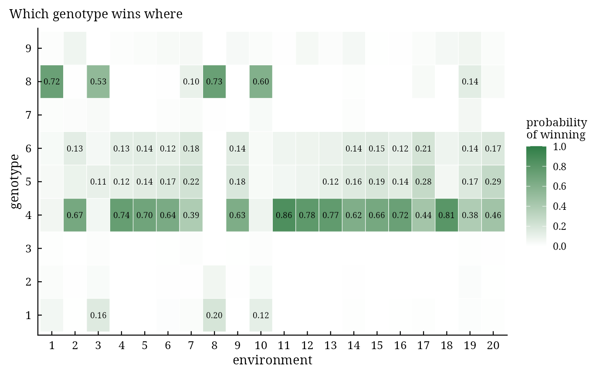

bam_winners() gives, for every environment, the posterior probability that each genotype has the best
expected response, the most probable winner, and the groups of environments with the same most probable winner
(candidate mega-environments). This is the Bayesian counterpart of the which-won-where view of the GGE biplot,
with a probability attached to every statement.
Arguments
- fit
a result of
bayes_ammi()orbayes_stability()(bam_stability()needsbayes_ammi()).- higher_better
TRUE(default) when larger values of the trait are better.
Value
An object of class c("bam_winners", "bam_result", "list"):
probabilitiesmatrix \(G \times E\) of the probabilities \(P_{ij}\).
winnersdata.table:Env,Winner(most probable),Probability,SecondandProbability2(the runner-up).megadata.table: groups of environments with the same most probable winner.
Methods: print(), plot(), bam_interpret().
Details
$$P_{ij} = \Pr\left(\eta_{ij} = \max_{i'}\eta_{i'j} \mid \mathbf{y}\right) \approx \frac{1}{S}\sum_{s=1}^{S}
I\left(\eta^{(s)}_{ij} = \max_{i'}\eta^{(s)}_{i'j}\right),$$
with the minimum instead of the maximum when higher_better = FALSE.
References
Yan, W., Hunt, L. A., Sheng, Q. and Szlavnics, Z. (2000). Cultivar evaluation and mega-environment investigation based on the GGE biplot. Crop Science, 40(3), 597–605. doi:10.2135/cropsci2000.403597x
Perez-Elizalde, S., Jarquin, D. and Crossa, J. (2012). A general Bayesian estimation method of linear-bilinear models applied to plant breeding trials with genotype x environment interaction. Journal of Agricultural, Biological, and Environmental Statistics, 17, 15–37. doi:10.1007/s13253-011-0063-9
See also
Other decisions:
bam_predict(),
bam_ranks(),
bam_stability(),
bam_superiority()
Author
Muhammad Yaseen (myaseen208@gmail.com)
Examples
data(Maiz)
fit <-
bayes_ammi(
.data = Maiz
, .y = y
, .gen = entry
, .env = site
, .rep = rep
, .nIter = 1000
, .k = 2
, .burnin = 200
, .thin = 1
, .chains = 1
, .priors = bam_priors(
mu_mean = 0
, mu_var = 1e+8
, tau_mean = 0
, tau_var = 1e+8
, delta_mean = 0
, delta_var = 1e+8
, lambda_mean = 0
, lambda_var = 1e+8
, nu = 1
, s2 = NULL
)
, .level = 0.95
, .seed = 1
, .align = TRUE
, .model = "GGE"
, .het = FALSE
, .waic = TRUE
)
w <-
bam_winners(
fit = fit
, higher_better = TRUE
)
w$winners
#> Env Winner Probability Second Probability2
#> <char> <char> <num> <char> <num>
#> 1: 1 8 0.724 4 0.064
#> 2: 2 4 0.665 6 0.132
#> 3: 3 8 0.534 1 0.157
#> 4: 4 4 0.742 6 0.128
#> 5: 5 4 0.696 5 0.140
#> 6: 6 4 0.644 5 0.165
#> 7: 7 4 0.388 5 0.218
#> 8: 8 8 0.728 1 0.197
#> 9: 9 4 0.628 5 0.179
#> 10: 10 8 0.605 1 0.122
#> 11: 11 4 0.859 6 0.074
#> 12: 12 4 0.782 6 0.083
#> 13: 13 4 0.767 5 0.115
#> 14: 14 4 0.616 5 0.158
#> 15: 15 4 0.664 5 0.186
#> 16: 16 4 0.723 5 0.145
#> 17: 17 4 0.441 5 0.277
#> 18: 18 4 0.807 6 0.080
#> 19: 19 4 0.384 5 0.166
#> 20: 20 4 0.456 5 0.287
#> Env Winner Probability Second Probability2
#> <char> <char> <num> <char> <num>
plot(x = w)
